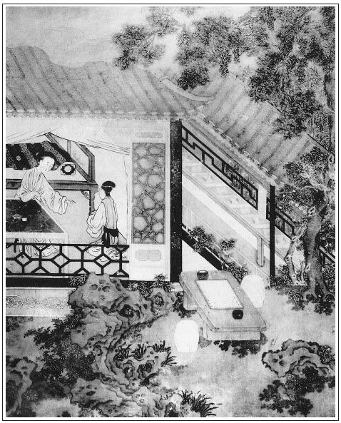

張回人知春梅為四女樂中第一人，不知作者已先極力描寫一玉簫也。蓋瓶者，養花之物；而簫者歌舞之器，悲歡皆可寄情於中。故生子加官，必寫玉簫失壺，而私書僮於此起，蓋藏淫佚之調於簫中歡也。瓶兒一死，即使姦情敗露，書僮遠去，是藏離別之調於簫中悲也。此是作者特以簫聲之悲歡離合，寫銀瓶之存亡，為一部大關目處也。
玉簫必隨月娘，是作者特誅月娘閨範不嚴，無端透漏春消息，以致有金蓮、敬濟、雪娥等事，故以玉蕭安放月娘房中，深罪月娘也。
「三章約」者，乃作者自言此後半部，皆散場之詞，所為離歌三疊，而煙水茫茫雲者，正渭城之景也。夫極力寫金、瓶、梅三人，今死其一矣，已後自然一一散去，不再出一筆寫其合聚來也。故此處以玉簫「三章約」一點明之。
瓶兒死而書僮去，春鴻去而春梅別，兩兩相映。蓋送歸鴻而為梅開之候，瓶兒墜而琴書冷矣。故瓶兒與書僮一時並寵，而藏壺必用琴童也。
玉簫入金蓮手中，雖為梅開之兆，然試以金蓮所品之名思之，又月娘之所必爭者也。故後文撒潑，以玉簫話起。
月下吹簫，玉樓人悄，蓮漏頻催，春梅映雪。一瓶春酒已罄，此時此際，琴書在側，不忍作送鴻迎燕之句，真大難為情，故用作書以消遣也，此又作者之心。
篇內接敘二太監講朝政，蓋為下文引見朝房地也。
詩曰：
玉殞珠沉思悄然，明中流淚暗相憐。
常圖蛺蝶花樓下，記效鴛鴦翠幕前。
只有夢魂能結雨，更無心緒學非煙。
朱顏皓齒歸黃土，脈脈空尋再世緣。

話說眾人散了，已有雞唱時分，西門慶歇息去了。玳安拿了一大壺酒、幾碟下飯，在鋪子裡還要和傅夥計、陳敬濟同吃。傅夥計老頭子熬到這咱，已是坐不住，搭下鋪就倒在炕上，向玳安道：「你自和平安吃罷，陳姐夫想也不來了。」玳安叫進平安來，兩個把那酒你一鍾我一盞都吃了。收過傢伙，平安便去門房裡睡了。玳安一面關上鋪子門，上炕和傅夥計兩個對廝腳兒睡下。傅夥計因閒話，向玳安說道：張夾閒中一話，最有神理。「你六娘沒了，這等棺槨唸經發送，也夠他了。」玳安道：「他的福好，只是不長壽。俺爹饒使了這些錢，還使不著俺爹的哩。俺六娘嫁俺爹，瞞不過你老人家，他帶了多少帶頭來！別人不知道，我知道。銀子休說，只金珠玩好、玉帶、絛環、䯼髻、值錢的寶石，也不知有多少。為甚俺爹心裡疼？不是疼人，是疼錢。繡旁歪議論，妙。張夾映盜財也。若說起六娘的性格兒，一家子都不如他，又謙讓又和氣，見了人，只是一面兒笑，自來也不曾喝俺每一喝，並沒失口罵俺每一句『奴才』。張夾映金蓮罵。使俺每買東西，只拈塊兒。俺每但說：『娘，拿等子，你稱稱。』他便笑道：『拿去罷，稱什麼。你不圖落圖什麼來？只要替我買值著。』這一家子，那個不借他銀使？只有借出來，沒有個還進去的。還也罷，不還也罷。俺大娘和俺三娘使錢也好。只是五娘和二娘，慳吝的緊。他當家，俺每就遭瘟來。會勝買東西，也不與你個足數，綁著鬼，一錢銀子，只稱九分半，著緊只九分，俺每莫不賠出來！」繡眉又將各人品題一番。好則太濫，刻則太苛，不獨寫出性情之偏，而奴僕一味懷惠藏怒如此，亦以見小人為難養也。傅夥計道：「就是你大娘還好些。」玳安道：「雖故俺大娘好，毛司火性兒，一回家好，娘兒每親親噠噠說話兒，你只休惱著他，不論誰，他也罵你幾句兒。繡旁映前罵。總不如六娘，萬人無怨，又常在爹跟前替俺每說方便兒。隨問天來大事，俺每央他央兒對爹說，無有個不依。張夾襯出又吸動書僮。只是五娘，行動就說：『你看我對爹說不說！』把這打只提在口裡。如今春梅姐，又是個合氣星。──天生的都在他一屋裡。」繡眉小人何嘗無春秋，然語語從私起見，自是小人之春秋。傅夥計道：「你五娘來這裡也好幾年了。」玳安道：「你老人家是知道的，想的起他那咱來的光景哩。繡旁輕薄。他一個親娘也不認的，來一遭，要便搶的哭了家去。繡旁厚者薄，自是觀人妙法。張夾點明打狗磨鏡一回。如今六娘死了，這前邊又是他的世界，明日那個管打掃花園，乾淨不乾淨，還吃他罵的狗血噴了頭哩！」張夾便渡「三章約」。兩個說了一回，那傅夥計在枕上齁齁就睡著了。繡旁好住法。張夾百忙中偏有此等閒細之筆。玳安亦有酒了，合上眼，不知天高地下，直至紅日三竿，都還未起來。
原來西門慶每常在前邊靈前睡，早晨玉簫出來收疊床鋪，西門慶便往後邊梳頭去。書僮蓬著頭，要便和他兩個在前邊打牙犯嘴，互相嘲逗，半日才進後邊去。張夾補出，深罪月娘。不想這日西門慶歸上房歇去，玉簫趕人沒起來，張夾深罪月娘。暗暗走出來，與書僮約了，走在花園書房裡干營生去了。張夾春梅，月娘婢，而後文如彼。今玉簫，月娘婢也，又如此。後小玉，亦月娘婢也，而後文如彼。月娘之為月娘，其閨範何如哉？不料潘金蓮起的早，驀地走到廳上，只見靈前燈兒也沒了，大棚裡丟的桌椅橫三豎四，沒一個人兒，繡眉寫亂，寫懈，寫辛苦，只兩語，宛然。張夾畫。只有畫童兒在那裡掃地。金蓮道：「賊囚根子，乾淨只你在這裡，都往那裡去了？」畫童道：「他每都還沒起來哩。」金蓮道：「你且丟下笤帚，到前邊對你姐夫說，有白絹拿一疋來，你潘姥姥還少一條孝裙子，再拿一副頭須繫腰來與他。他今日家去。」畫童道：「怕不俺姐夫還睡哩，等我問他去。」良久回來道：「姐夫說不是他的首尾，書僮哥與崔本哥管孝帳。娘問書僮哥要就是了。」金蓮道：「知道那奴才往那去了，你去尋他來。」畫童向廂房裡瞧了瞧，繡旁畫。說道：張夾略過廂房。「才在這裡來，敢往花園書房裡梳頭去了。」金蓮說道：「你自掃地，等我自家問這囚根子要去。」因走到花園書房內，忽然聽見裡面有人笑聲。
推開門，只見書僮和玉簫在床上正幹得好哩。便罵道：「好囚根子，你兩個幹得好事！」諕得兩個做手腳不迭，齊跪在地下哀告。金蓮道：「賊囚根子，你且拿一疋孝絹、一疋布來，打發你潘姥姥家去著。」書僮連忙拿來遞上。金蓮逕歸房來。那玉簫跟到房中，打旋磨兒跪在地下央及：「五娘，千萬休對爹說。」金蓮便問：「賊狗肉，你和我實說，從前已往，偷了幾遭？一字兒休瞞我，便罷。」那玉簫便把和他偷的緣由說了一遍。金蓮道：「既要我饒你，你要依我三件事。」張夾又與牆頭約後斷西門一映。玉簫道：「娘饒了我，隨問幾件事我也依娘。」金蓮道：「第一件，你娘房裡，但凡大小事兒，就來告我說。你不說，我打聽出來，定不饒你。張夾月娘家法如此，直照『撒潑』一回。第二件，我但問你要甚麼，你就捎出來與我。第三件，你娘向來沒有身孕，如今他怎生便有了？」繡眉三件事，究竟不出聽籬察壁、愛小便宜心腸，所以為妙。張夾深心。玉簫道：「不瞞五娘說，俺娘如此這般，吃了薛姑子的衣胞符藥，便有了。」潘金蓮一一聽記在心，才不對西門慶說了。書僮見潘金蓮冷笑領進玉簫去了，知此事有幾分不諧。向書房廚櫃內收拾了許多手帕汗巾、挑牙簪紐，並收的人情，他自己也攢有十來兩銀子，又到前邊櫃上誆了傅夥計二十兩，只說要買孝絹，逕出城外，雇了長行頭口，到碼頭上，搭在鄉里船上，往蘇州原籍家去了。繡眉去固是，即不去亦不妨。正是：
撞碎玉籠飛綵鳳，頓開金鎖走蛟龍。
那日，李桂姐、吳銀兒、鄭愛月都要家去了。薛內相、劉內相早晨差人抬三牲桌面來祭奠燒紙。張夾二內相祭，祭七。又每人送了一兩銀子伴宿分資，叫了兩個唱道情的來，白日裡要和西門慶坐坐。張夾活是太監。緊等著要打發孝絹，尋書僮兒要鑰匙，一地裡尋不著。傅夥計道：「他早晨問我櫃上要了二十兩銀子買孝絹去了，口稱爹吩咐他孝絹不夠，敢是向門外買去了？」西門慶道：「我並沒吩咐他，如何問你要銀子？」一面使人往門外絹鋪找尋，那裡得來！月娘向西門慶說：「我猜這奴才有些蹺蹊，不知弄下甚麼磣兒，繡眉月娘猜到弄磣，可謂善猜，然決不猜到自家丫頭弄磣。人家如月娘者不少。拐了幾兩銀子走了。張夾深罪月娘。你那書房裡還不瞧瞧，只怕還拿甚麼去了。」西門慶走到兩個書房裡都瞧了，只見庫房裡鑰匙掛在牆上，大櫥櫃裡不見了許多汗巾手帕，並書禮銀子、挑牙紐扣之類，西門慶心中大怒，叫將該地方管役來，吩咐：「各處三街兩巷與我訪緝。」那裡得來！正是：
不獨懷家歸興急，五湖煙水正茫茫。
那日，薛內相從晌午就坐轎來了。西門慶請下吳大舅、應伯爵、溫秀才相陪。先到靈前上香，打了個問訊，然後與西門慶敘禮，說道：「可傷，可傷！如夫人是甚病兒歿了？」繡旁太監稱謂轉不苟。張夾反襯西門非禮處。西門慶道：「不幸患崩瀉之疾歿了，多謝老公公費心。」薛內相道：「沒多兒，將就表意罷了。」因看見掛的影，說道：「好位標緻娘子！繡旁不諱，妙。張夾又點傳真。正好青春享福，只是去世太早些。」溫秀才在旁道：「物之不齊，物之情也。繡旁開口腐氣直衝，妙甚。窮通壽夭，自有個定數，雖聖人亦不能強。」薛內相扭回頭來，見溫秀才穿著衣巾，繡眉左顧右盼，都有情景，可悟筆墨一種生氣。因說道：「此位老先兒是那學裡的？」張夾妙絕，秀才切勿怪。溫秀才躬身道：「學生不才，備名府庠。」薛內相道：「我瞧瞧娘子的棺木兒。」繡旁婆氣得妙。張夾活是太監。西門慶即令左右把兩邊帳子撩起，薛內相進去觀看了一遍，極口稱讚道：「好副板兒！請問多少價買的？」西門慶道：「也是捨親的一副板，學生回了他的來了。」應伯爵道：「請老公公試估估，那裡地道，甚麼名色？」薛內相仔細看了說：「此板不是建昌，就是副鎮遠。」伯爵道：「就是鎮遠，也值不多。」薛內相道：「最高者，必定是楊宣榆。」伯爵道：「楊宣榆單薄短小，怎麼看得過！此板還在楊宣榆之上，名喚做桃花洞，在於湖廣武陵川中。昔日唐漁父入此洞中，曾見秦時毛女在此避兵，是個人跡罕到之處。張夾奉承得可笑，然則漁父之舟亦載不許多棺材料也。此板七尺多長，四寸厚，二尺五寬。還看一半親家分上，還要了三百七十兩銀子哩。公公，你不曾看見，解開噴鼻香的，裡外俱有花色。」薛內相道：「是娘子這等大福，才享用了這板。俺每內官家，到明日死了，還沒有這等發送哩。」吳大舅道：「老公公好說，與朝廷有分的人，享大爵祿，俺們外官焉能趕的上。老公公日近清光，代萬歲傳宣金口。見今童老爺加封王爵，子孫皆服蟒腰玉，何所不至哉！」薛內相便道：「此位會說話的兄，繡眉奉承一番，只博得「會說話」三字，可思，可思。張夾喜極。請問上姓？」西門慶道：「此是妻兄吳大哥，見居本衛千戶之職。」薛內相道：「就是此位娘子令兄麼？」繡旁糊塗得妙，卻又不是糊塗。張夾總是反襯西門。西門慶道：「不是。乃賤荊之兄。」薛內相復於吳大舅聲諾說道：「吳大人，失瞻！」繡眉此改容致敬稱「吳大人」，與前「如夫人」三字、「兄」字、「令兄」字，冷冷相應，有許多輕重在內，細玩自見。
看了一回，西門慶讓至卷棚內，正面安放一把交椅，薛內相坐下，打茶的拿上茶來吃了。薛內相道：「劉公公怎的這咱還不到？叫我答應的迎迎去。」青衣人跪下稟道：「小的邀劉公公去來，劉公公轎已伺候下了，便來也。」薛內相又問道：「那兩個唱道情的來了不曾？」西門慶道：「早上就來了。──叫上來！」不一時，走來面前磕頭。薛內相道：「你每吃了飯不曾？」那人道：「小的每吃了飯了。」薛內相道：「既吃了飯，你每今日用心答應，我重賞你。」西門慶道：「老公公，學生這裡還預備著一起戲子，唱與老公公聽。」薛內相問：「是那裡戲子？」西門慶道：「是一班海鹽戲子。」薛內相道：「那蠻聲哈剌，誰曉的他唱的是甚麼！張夾妙絕。那酸子每在寒窗之下，三年受苦，九載遨遊，背著琴劍書箱來京應舉，得了個官，又無妻小在身邊，便希罕他這樣人。張夾忽然放筆，將讀書人一寫，趣絕。你我一個光身漢、老內相，要他做甚麼？」溫秀才在旁邊笑說道：繡眉笑人者復為人所笑，世情大都如此。然薛太監笑得直，笑得孩；溫秀才笑得矯，笑得腐，與其嬌腐，寧直寧孩。「老公公說話，太不近情了。居之齊則齊聲，居之楚則楚聲。老公公處於高堂廣廈，豈無一動其心哉？」張夾已心焉畫童矣。這薛內相便拍手笑將起來道：「我就忘了溫先兒在這裡。你每外官，原來只護外官。」溫秀才道：「雖是士大夫，也只是秀才做的。老公公砍一枝損百林，兔死狐悲，物傷其類。」薛內相道：「不然。一方之地，有賢有愚。」
正說著，忽左右來報：「劉公公下轎了。」吳大舅等出去迎接進來，向靈前作了揖。敘禮已畢，薛內相道：「劉公公，你怎的這咱才來？」劉內相道：「北邊徐同家來拜望，陪他坐了一回，打發去了。」一面分席坐下，左右遞茶上去。因問答應的：「祭奠桌面兒都擺上了不曾？」下邊人說：「都排停當了。」劉內相道：「咱每去燒了紙罷。」西門慶道：「老公公不消多禮，頭裡已是見過禮了。」劉內相道：「此來為何？還當親祭祭。」當下，左右捧過香來，兩個內相上了香，遞了三鍾酒，拜下去。西門慶道：「老公公請起。」於是拜了兩拜起來，西門慶還了禮，復至卷棚內坐下。然後收拾安席，遞酒上坐。兩位內相分左右坐了，吳大舅、溫秀才、應伯爵從次，西門慶下邊相陪。子弟鼓板響動，遞了關目揭帖。兩位內相看了一回，揀了一段《劉智遠白兔記》。張夾先陪一句妙。唱了還未幾折，心下不耐煩，一面叫上兩個唱道情的去，打起漁鼓，並肩朝上，高聲唱了一套「韓文公雪擁藍關」故事下去。張夾與娶瓶兒鬧華筵時唱「韓湘子尋叔」對針為鎖。
薛內相便與劉內相兩個說說話兒，道：「劉哥，你不知道，昨日這八月初十日，下大雨如注，雷電把內裡凝神殿上鴟尾震碎了，諕死了許多宮人。朝廷大懼，命各官修省，逐日在上清宮宣《精靈疏》建醮。禁屠十日，張夾如此便為修省乎！法司停刑，百官不許奏事。張夾修省乃不許奏事，不知何處修省？昨日大金遣使臣進表，要割內地三鎮，依著蔡京那老賊，繡旁罵得妙。就要許他。張夾對其子而罵其父，太難為情。掣童掌事的兵馬，交都御史譚積、黃安十大使節制三邊兵馬，又不肯，還交多官計議。昨日立冬，萬歲出來祭太廟，太常寺一員博士，名喚方軫，早晨打掃，看見太廟磚縫出血，殿東北上地陷了一角，繡眉薛太監情性口角模寫已盡，至此又明目張膽談一通朝政，令人絕倒。寫表奏知萬歲。科道官上本，極言童掌事大了，宦官不可封王。如今馬上差官，拿金牌去取童掌事回京。」劉內相道：「你我如今出來在外做土官，那朝事也不干咱每。俗語道，咱過了一日是一日。便塌了天，還有四個大漢。張夾天下躲事人如此，千古同慨。到明天，大宋江山管情被這些酸子弄壞了。繡旁定論。張夾天下壞事人如此，千古同慨。王十九，咱每隻吃酒！」張夾天下鬱悶人如此，千古同慨。此一段為一百回金兵作引。因叫唱道情的上來，吩咐：「你唱個『李白好貪杯』的故事。」繡旁好題目。張夾一腔心事都付酒杯，作者深意在此。那人立在席前，打動漁鼓，又唱了一回。
直吃至日暮時分，吩咐下人，看轎起身。西門慶款留不住，送出大門，喝道而去。回來，吩咐點起燭來，把桌席休動，留下吳大舅、應伯爵、溫秀才坐的，又使小廝請傅夥計、甘夥計、韓道國、賁第傳、崔本和陳敬濟復坐。叫上子弟來吩咐：「還找著昨日《玉環記》上來。」張夾一語接轉，上用幾回院本作間，又是雲斷山連異樣章法。因向伯爵道：「內相家不曉的南戲滋味。早知他不聽，我今日不留他。」伯爵道：「哥，到辜負你的意思。內臣斜局的營生，他只喜《藍關記》、搗喇小子山歌野調，那裡曉的大關目悲歡離合！」於是下邊打動鼓板，將昨日《玉環記》做不完的折數，一一緊做慢唱，都搬演出來。西門慶令小廝席上頻斟美酒。伯爵與西門慶同桌而坐，便問：「他姐兒三個還沒家去，怎的不叫出來遞杯酒兒？」繡眉又冒一句，方不露從前之相。西門慶道：「你還想那一夢兒，他每去的不耐煩了！」伯爵道：「他每在這裡住了有兩三日？」西門慶道：「吳銀兒住的久了。」張夾話出傷心。當日，眾人坐到三更時分，搬戲已完，方起身各散。西門慶邀下吳大舅，明日早些來陪上祭官員。與了戲子四兩銀子，打發出門。
到次日，周守備、荊都監、張團練、夏提刑，合衛許多官員，都合了分資，辦了一副豬羊吃桌祭奠，張夾合衛祭，祭八。有禮生讀祝。西門慶預備酒席，李銘等三個小優兒伺候答應。到晌午，只聽鼓響，祭禮到了。吳大舅、應伯爵、溫秀才在門首迎接，只見後擁前呼，張夾描神處，往往在此。眾官員下馬，在前廳換衣服。良久，把祭品擺下，眾官齊到靈前，西門慶與陳敬濟還禮。禮生喝禮，三獻畢，跪在旁邊讀祝，祭畢。西門慶下來謝禮已畢，吳大舅等讓眾官至卷棚內，寬去素服，待畢茶，就安席上坐，觥籌交錯，慇勤勸酒。李銘等三個小優兒，銀箏檀板，朝上彈唱。眾官歡飲，直到日暮方散。張夾與上回接連三席一時寫來，令人五色迷目，卻無一筆犯手，何等大力！西門慶還要留吳大舅眾人坐，吳大舅道：「各人連日打攪，姐夫也辛苦了，各自歇息去罷。」張夾細。當時告辭回家。正是：
天上碧桃和露種，日邊紅杏倚雲栽。
家中巨富人趨附，手內多時莫論財。
文回文禹門云：大風吹倒梧桐樹，自有旁人話短長。人之賢否，自有定評。惟其左右之人，知之最真，亦言之最當。況此書皆作者所言，玳安之所褒貶，實作者之所平章也。此間議論，亦如吳神仙之相，龜婆之卜，固明明指示於人，閱者又何必自作聰明，妄出見解，而有所偏好偏惡於其間也。西門慶此番舉動，玳安一言以蔽之曰：不是疼人是疼錢。哀梨並剪，爽利乃爾。吾故曰：是勢利，非情分也。至於諸婦之軒輊，大娘與三娘並舉，二娘與五娘同稱，涇渭之分，昭然可指。然此第言其用錢也，恐閱者還不明白，故又特表大娘之順則喜，逆則怒，不如六娘又謙讓又和氣，以陪襯之。五娘開口打，閉口罵，復有春梅濟其惡，脅其虐，以則效之。其不言雪娥者，本在不足局之列，亦人之所共知也。作者口中月旦，已告人以低昂，何嘗皮裡陽秋，仍望人之推測。奈何愛而加諸膝，惡而墜諸淵，逞一己之私心，自詡讀書得簡，此不但非作者之知己，實為作者之罪人也。
即此一回，玉簫與書僮私通，深責月娘之疏忽，而不問金蓮之縱容。豈以金蓮為不足道也，何又期月娘之太深也！此刻西門慶已死，尚可說也，今西門慶尚存，獨無責乎？後之金蓮因奸被逐，又謂月娘實殺金蓮，不解其何自相矛盾乃爾！甚矣！人之不可有偏心有成見也。玉簫與書僮之事，偏又為金蓮所見，甚可怕也，而不知乃不幸之大幸也。三章之約，前有西門慶，後有如意兒。心法之傳，金蓮實授自王婆子，而推而廣之也，並能推己以及人。其視苟合之事，人之常情，不足為異。惜乎！書僮不知琴童之事，以為可怕而逃。否則大可時相往來，或者金蓮竟有親來臨幸之日，亦未可知。何其餒也。
按：「深罪月娘之疏忽」，系指竹坡原評：「玉簫必隨月娘，是作者特誅月娘閨範不嚴，無端透漏春消息，以致有金蓮，敬濟、雪娥等事。故以玉簫安放月娘房中，深罪月娘也。」